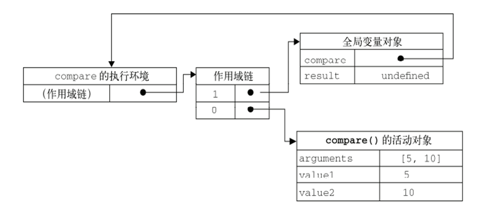
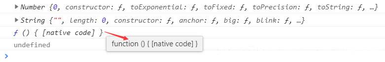

闭包、原型链和继承
.jpeg)
闭包（closure）
闭包的概念
官方对闭包的解释是：一个拥有许多变量和绑定了这些变量的环境的表达式（通常是一个函数），因而这些变量也是该表达式的一部分。
闭包是指有权访问另一个函数作用域中的变量（参数）的函数
闭包就是能够读取其他函数内部变量（参数）的函数
闭包可以理解成定义在一个函数内部的函数
函数就是闭包
当一个函数能够记住并访问到其所在的词法作用域及作用域链，特别强调是在其定义的作用域外进行的访问，此时该函数和其上层执行上下文共同构成闭包。
需要明确的几点：
1. 闭包一定是函数对象
2. 函数内保持对上层作用域的引用 *
3. 闭包和词法作用域、作用域链、垃圾回收机制等息息相关
4. 当函数在其定义的作用域外进行访问时，才产生闭包 *
5. 闭包是由该函数和其上层执行上下文共同构成 *
变量及作用域：
变量无非就是两种：全局变量和局部变量。
Javascript语言中，函数内部可以直接读取全局变量，在函数外部无法直接读取函数内的局部变量。
程序设计中作用域的概念：
通常来说，一段程序代码中所用到的名字并不总是有效／可用的，而限定这个名字的可用性的代码范围就是这个名字的作用域。
词法作用域：
词法作用域，也叫静态作用域，它的作用域是指在词法分析阶段就确定了，不会改变。
动态作用域，是在运行时根据程序的流程信息来动态确定的，而不是在写代码时进行静态确定的。
主要区别：词法作用域是在写代码或者定义时确定的，而动态作用域是在运行时确定的。
词法作用域关注函数在何处声明，而动态作用域关注函数从何处调用。
javascript 使用的是词法作用域 （静态）在解析阶段就确定了
// 词法作用域
var abc = 1;
function f1() {
console.log(abc);
}
function f2() {
var abc = 2;
f1();
}
f2(); //输出1
// 类似动态作用域
function show() {
console.log(this);
}
show();
document.querySeletor(".btn").onclick = function () {
console.log(this);
show();
}
document.querySelector(".btn").onclick = show;
var timer=setTimeout(show,1000);
作用域链
作用域链：本质上是一个指向变量对象的指针列表，它只引用但不实际包含变量对象。
每个执行环境都有一个与之关联的变量对象，执行环境中定义的所有变量和函数都保存在这个变量对象中。
全局执行环境是最外围的一个执行环境，在Web浏览器中，全局执行环境的变量对象是window对象。
当JavaScript解释器初始化执行代码时，首先默认进入全局执行环境。
局部执行环境的变量对象，则只在函数执行的过程中存在。
当函数被调用的时候，会创建一个特殊的对象–活动对象。
活动对象之后会作为局部执行环境的变量对象来使用。
function compare(value1,value2){
if(value1 < value2){
return -1;
} else if( value1 > value2 ) {
return 1;
} else {
return 0;
}
}
var result = compare(5, 10);

垃圾回收机制
各大浏览器通常采用的垃圾回收有两种方法：标记清除、引用计数
标记清除
当变量进入执行环境时，将这个变量标记为“进入环境”。当变量离开执行环境时，则将其标记为“离开环境”，就销毁回收内存。
引用计数
跟踪记录每个值被引用的次数，当引用次数变成0时，就销毁回收内存
function fn1(){
var n = 5;
n++;
return n;
}
console.log( fn1() );
console.log( fn1() );
闭包的应用
在函数外读取函数内部的变量；
让局部变量的值能够被保存下来；
将模块的公有属性和方法暴露出来。
function fn1(){
var n = 5;
return function fn2() {
n++;
return n;
}
}
var fn = fn1();
console.log( fn() );
console.log( fn() );
console.log( fn() );
注意：
闭包会使得函数中的变量被保存在内存中，增加内存消耗，不能滥用闭包，否则会造成网页的性能问题，在低版本IE中还可能导致内存泄露。
原型及原型链
JavaScript是一种直译式脚本语言，是一种动态类型、弱类型、基于原型的语言。
在所有语言中，JavaScript 几乎是独一无二的，也许是唯一的可以被称为“面向对象”的语言，
因为可以根本没有类而直接创建对象的语言很少，而 JavaScript 就是其中之一。
在 JavaScript 中，类不能（因为根本不存在类）描述对象可以做什么，对象可以直接定义它自己的行为。
JavaScript 只有 对象。
我们把JS中的对象分为 普通对象 和 函数对象
属性：prototype（原型）
每个函数对象(Function.prototype除外)都有一个prototype属性（这个属性指向一个对象即 原型对象）
prototype原型是函数的一个默认属性，在函数的创建过程中由JS编译器自动添加
var fn1 = function (){ };
var fn2 = new Function();
function fn3(){ };
console.log(fn1.prototype);
console.log(fn2.prototype);
console.log(fn3.prototype); // Object{} 这就是我们所说的原型，它是一个对象也叫原型对象
// 为什么说 Function.prototype 除外呢？看代码：
console.log(Number.prototype);
console.log(String.prototype);
console.log(Function.prototype);
console.log(Function.prototype.prototype);// 结果看下图

可以看到内置构造函数Number、String等，它们的原型指向一个普通对象（Number{}和String{}）
而Function的原型则指向函数对象 function () { [native code] }，就是原生代码，二进制编译的！
这个函数对象(Function.prototype)是没有原型属性的，所以它的prototype返回 undefined。
我们继续来了解
function Cat(){};
Cat.prototype.name = '小白'; // 给原型对象添加属性
Cat.prototype.color = 'black'; // 给原型对象添加属性
Cat.prototype.sayHello = function (){ // 给原型对象添加方法
console.log('大家好，我的名字叫'+this.name);
}
var cat1 = new Cat(); // 实例对象
var obj = Cat.prototype;// 原型对象
console.log(obj);
console.log(cat1.constructor);
console.log(obj.constructor);
console.log(Cat.prototype === cat1.constructor.prototype);
属性：constructor（构造器）
每个对象都有一个隐藏属性constructor，该属性指向对象的构造函数（“类”）
通过上面的代码我们可以看到，实例对象 cat1 和原型对象 obj 它们的构造器相同，都指向 Cat！
我们换一种写法：
function Cat(){}
Cat.prototype = {// 原型对象
name: '小白',
color: 'black',
sayHello: function (){
console.log('大家好，我的名字叫'+this.name);
}
}
var cat1 = new Cat();
这种写法更直观看到原型对象是什么，但是
console.log(Cat.prototype === cat1.constructor.prototype);
console.log(Cat.prototype.constructor === Object);
console.log(cat1.constructor === Object);
此时 Cat.prototype 指向一个对象字面量方式定义的对象{}，其构造器（constructor）指向的自然是根构造器 Object，所以 cat1 的构造器也指向根构造器 Object。
由此可见，属性 constructor 并不可靠！
那么，原型有什么用呢？
原型的主要作用是用于“继承”
var Person = function(name){
this.name = name;
};
Person.prototype.type = 'human';
Person.prototype.getName = function(){
console.log(this.name);
}
var p1 = new Person('jack');
var p2 = new Person('lucy');
p1.getName();
console.log(p1.type);
p2.getName();
console.log(p2.type);
示例中通过给原型对象(Person.prototype)添加属性方法
那么由 Person 实例出来的普通对象（p1 p2）就继承了这个属性方法（type getName）
再看一个示例
Object.prototype.jdk = 'abc123';
Object.prototype.sayHi = function () {
alert('嗨~大家好');
};
String.prototype.pin = function () {
console.log(this + '&biubiu');
}
var str = 'yoyo';
var num = 123;
var arr = [1,2,3];
var boo = true;
str.sayHi(); // 嗨~大家好
num.sayHi(); // 嗨~大家好
arr.sayHi(); // 嗨~大家好
boo.sayHi(); // 嗨~大家好
console.log(str.jdk); // abc123
console.log(num.jdk); // abc123
console.log(arr.jdk); // abc123
console.log(boo.jdk); // abc123
str.pin(); // yoyo&biubiu
num.pin(); // 报错 num.pin is not a function
arr.pin(); // 报错 arr.pin is not a function
boo.pin(); // 报错 boo.pin is not a function
看出点什么了吗？
所有对象都继承了Object.prototype原型上的属性方法（换句话说它们都是Object的实例）
str 还继承了String.prototype原型上的属性方法
再看之前写过的示例：
Date.prototype.getWeek = function () {
var arr = ['星期日', '星期一', '星期二', '星期三', '星期四', '星期五', '星期六'];
var index = this.getDay();//0-6
return arr[index];
}
var dates = new Date();
console.log(dates.getWeek()); // '星期一'
所有 Date 对象都将继承 getWeek 方法
具体是怎么实现的继承，我们就要讲到原型链了
属性：_ _ proto _ _ (原型)
每个对象都有一个隐藏属性_ _proto_ _，用于指向创建它的构造函数的原型 obj1.__proto __ -> Person.prototype
懵逼......怎么又一个原型？？？
上面我们讲prototype是针对每个函数对象，这个_ _ proto _ _是针对每个对象
属性_ _ proto _ _非官方标准属性，但主流的浏览器基本都支持
var n = 123;
var s = 'jdk';
var b = true;
var a = [];
var f = function (){};
var o = {};
console.log(n.__proto__);
console.log(n.__proto__ === Number.prototype);
console.log(s.__proto__ === String.prototype);
console.log(a.__proto__ === Array.prototype);
console.log(f.__proto__ === Function.prototype);
console.log(o.__proto__ === Object.prototype);
console.log(b.__proto__ === Boolean.prototype);
对象 通过_ _ proto _ _指向原型对象，函数对象 通过prototype指向原型对象
那么原型链呢，链在哪？
通过上面写的示例，我们来找找原型链：
Object.prototype.jdk = 'abc123';
Object.prototype.sayHi = function (){
console.log('嗨~大家好');
}
var str = 'yoyo';
str.sayHi(); // 嗨~大家好
console.log(str.jdk); // 'abc123'
str 是怎么访问到 sayHi 方法和 jdk 属性的呢？
了解一下方法 hasOwnProperty() ，用于判断某个属性是否为该对象本身的一个成员
看看大致的访问过程：
console.log(str.hasOwnProperty('sayHi'));//false str自身没有sayHi方法
console.log(str.__proto__.hasOwnProperty('sayHi'));//false 原型对象也没有sayHi方法
console.log(str.__proto__.__proto__.hasOwnProperty('sayHi'));//true 原型的原型有sayHi方法
str -> str._ _ proto _ _ -> str._ _ proto _ _ . _ _ proto _ _ 感觉到什么吗？
我们来描述一下执行过程：
str.sayHi() --> 自身查找 --> 没有sayHi方法 --> 查找上层原型 str._ _ proto _ _ --> 指向 String.prototype对象 --> 没有sayHi方法 --> 查找上层原型 String.prototype._ _ proto _ _ --> 指向Object.prototype对象 --> 找到sayHi方法 --> 执行sayHi方法
环环相扣，是不是像链条一样呢？这个就是我们所说的 原型链
原型链是靠_ _ proto _ _来维护的！
下面的示例更形象： 
原型链的最后是 null
如果还没晕，恭喜你似乎领悟到了某些人生的哲学：
《易经》-- ‘太极生两仪，两仪生四象，四象生八卦’
《道德经》-- ‘无，名天地之始’
是不是很熟悉，是不是很意外！
简而言之，原型链，就是在当前对象中如果自身没有该属性,则向上一层原型对象中寻找，一直到最外层，也就是null
熟悉了原型和原型链，我们来看看JS中常见实现“继承”的方式：
// demo1 构造函数继承（对象冒充继承）
// 原理：调用父类构造函数，并改变其中的this （bind、call、apply）
function Cat(n,c){ // 猫 类
this.name = n;
this.color = c;
this.trait = function (){
console.log('卖萌~');
}
}
Cat.prototype.skill = function (){ // 原型上的属性方法
console.log('抓老鼠');
}
// 需求：狗要卖萌，狗要多管闲事-抓老鼠
function Dog(n,c,f){ // 狗 类
this.food = f;
Cat.call(this,n,c); // 狗冒充猫，访问猫的属性方法
}
var dog1 = new Dog('二哈','yellow','shi');// 实例对象
console.log(dog1.name); // 二哈
dog1.trait(); // 卖萌
dog1.skill(); // 报错 dog1.skill is not a function
我们看到这种继承方式有局限性，“父类”原型上的属性方法无法继承，所以二哈没有抓老鼠的技能
// demo2 原型链继承
// 原理：将原型对象链接到另一个对象实现继承（改变原型的指向）
function Cat(n,c){ // 猫 类
this.name = n;
this.color = c;
this.trait = function (){
console.log('卖萌~');
}
}
Cat.prototype.skill = function (){// 原型上的属性方法
console.log('抓老鼠');
}
function Dog(n,c,f){ // 狗 类
this.food = f;
}
Dog.prototype = new Cat(); // 把狗的原型指向猫的实例对象
var dog1 = new Dog('二哈','yellow','shi');
console.log(dog1.name); // undefined
console.log(dog1.food); // shi
dog1.trait(); // 卖萌~
dog1.skill(); // 抓老鼠
console.log(dog1.constructor); // Cat
问题一：
实例化对象的时候不能给“父类”传参，导致访问dog1.name没有值
问题二：
有句台词：‘人是人妈生的，妖是妖妈生的 ’ 现在 dog1.constructor 指向 Cat，意味着 二哈 是猫妈生的！很显然这不符合伦理，也不环保...
// demo3 混合继承（组合继承）
function Cat(n,c){
this.name = n;
this.color = c;
this.trait = function (){
console.log('卖萌~');
}
}
Cat.prototype.skill = function (){
console.log('抓老鼠');
}
function Dog(n,c,f){
this.food = f;
Cat.call(this,n,c);// 对象冒充继承
}
// Dog.prototype = new Cat(); “构造器调用”得到一个对象，容易产生一些副作用
Dog.prototype = Object.create(Cat.prototype);// 原型链继承
// Object.create()用于创建一个空对象，并把该对象的[[Prototype]]链接到Cat.prototype
Dog.prototype.constructor=Dog;// 指正构造器
var dog1=new Dog('二哈','yellow','shi');
console.log(dog1.name);// 二哈
console.log(dog1.food);// shi
dog1.trait();// 卖萌~
dog1.skill();// 抓老鼠
console.log(dog1.constructor);// Dog
两种方式结合可以实现相对比较完美的“继承”
别忘了指正构造器(类型)，不能认贼作父！
// demo4 拷贝继承
// 原理：将对象的成员复制一份给需要继承的对象
var parentObj = {
name: 'xm',
age: 25,
friends: ['xw', 'xh', 'xz'],
showName: function(){
alert(this.name);
}
}
// 创建需要继承的子对象
var childObj = {};
// 开始拷贝属性(浅拷贝)
for( var i in parentObj ){
childObj[i] = parentObj[i];
}
// parentObj.friends.push('xf');
console.log(childObj);
console.log(parentObj);
问题：
如果继承过来的成员是引用类型的话，那么这个引用类型的成员在父对象和子对象之间是共享的，也就是说修改了之后，父子对象都会受到影响。需要深拷贝!
小结：
在 JavaScript 中，没有类，只有对象
多年来JS开发者们努力尽可能地模拟面向类（山寨成某些看起来像“类”的东西）
原型机制和“类”不一样，在面向类的语言中，可以制造一个类的多个 拷贝（即“实例”），但是在 JavaScript 中，没有这样的拷贝处理发生
原型机制是一个内部链接，其本质是行为委托、对象间创建链接
这种链接在对一个对象进行属性/方法引用，而这样的属性/方法不存在时实施
在这种情况下，[[Prototype]] 链接告诉引擎在那个被链接的对象上查找这个属性/方法
接下来，如果这个对象不能满足查询，它的 [[Prototype]] 又会被查找，如此继续。。。
这个在对象间的一系列链接构成了所谓的“原形链”
每个继承父函数的子函数的对象都包含一个内部属性_ _ proto _ _，该属性包含一个指针，指向父函数的prototype，若父函数的原型对象的_ _ proto _ _属性为再上一层函数，在此过程中就形成了原型链。
对象间的关系图：